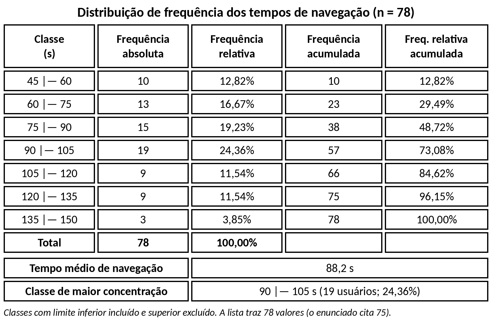

Em um sistema de rastreamento de cliques em um site, foram registrados os tempos de navegação (em segundos) de usuários. Construir a tabela de distribuição de frequência (absoluta, relativa e acumulada), determinar o tempo médio de navegação e identificar o intervalo com maior concentração de cliques.
Amplitude de 100 s (de 45 s a 145 s). Pela regra de Sturges, 1 + 3,322 × log(78) ≈ 7,3, foram usadas 7 classes de amplitude 15 s. Cada classe inclui o limite inferior e exclui o superior.
